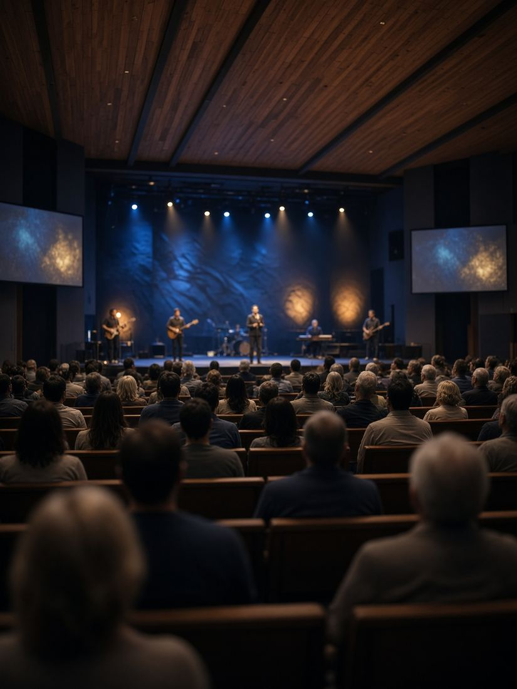

Sarah Okafor2h ago, Youth Ministry
God is faithful! Grateful for His unfailing love and the opportunity to serve in this church. #Grateful #GodIsGood


- Esther Udo Amen. Grateful with you, Sarah.
- Joshua Ike This church family is a gift.